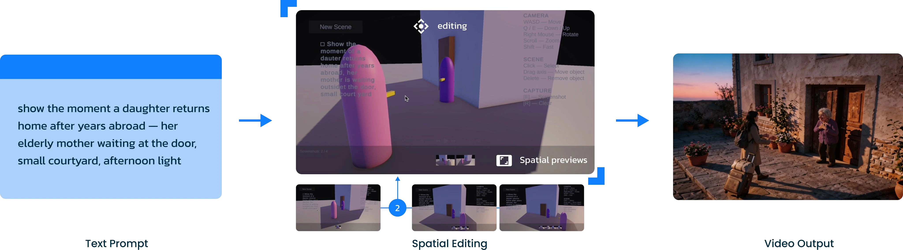

Background & mechanism
Text prompts can leave character placement and camera composition ambiguous. Scene2Scene turns a narrative prompt into a lightweight 3D blockout, where creators can reposition characters and adjust the viewpoint before exporting a spatial reference for video generation.

Interaction demo
Creators directly manipulate the scene and camera, inspect the composition, and export a preview to guide generation. This prototype recording shows the transition from an editable layout to a generated scene.
My contribution
- Co-first author; co-developed the spatial authoring system.
- Implemented interactive object placement and camera controls.
- Connected editable 3D blockouts with the video-generation workflow.
What we studied
We examined whether direct spatial editing helped people express their intended layouts more clearly than text-only prompting. Ten participants tried both conditions and rated how closely the generated videos matched their spatial intent.
What we learned
Spatial editing received a mean intent-fidelity score of 4.5 out of 5, compared with 3.1 for text-only prompting. Eight of ten participants preferred it. Participants valued direct control, though 3D navigation added effort for those with less cinematography experience.
These findings are preliminary: the study used a small sample, subjective ratings, and a fixed condition order.